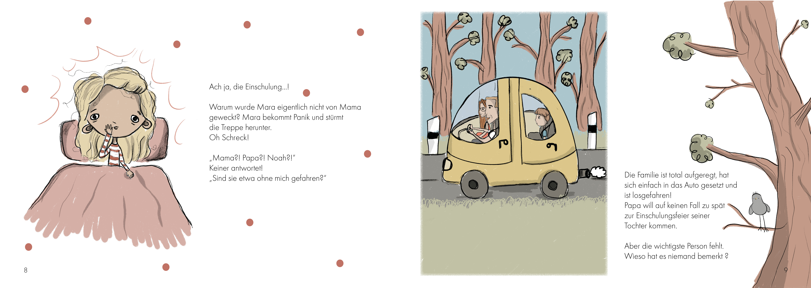
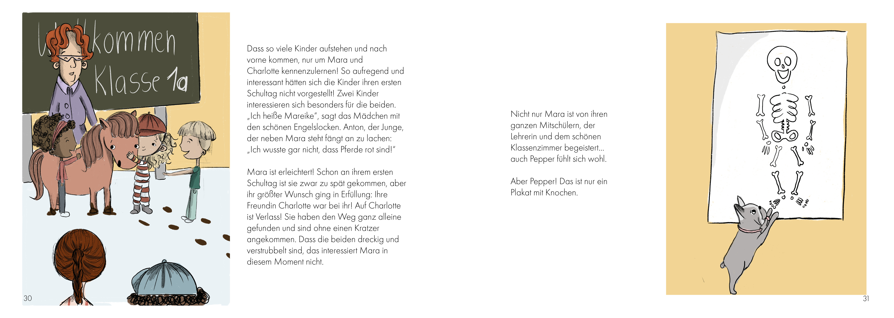

ReadMyBook

Wie du loslegst
aktuell gar nicht - später downloade einfach die App im Google Play Store
Name
noch ausdenken
Beschreibung
Dieses kleine Projekt ist eine App zum Buch "Mara und Charlotte - Einschulung mit Hindernissen".
Die App ermöglicht es Kindern sich das Buch in 3 Modi vorlesen zu lassen.
-
Scannen einer beliebigen Seite - Vorlesen des gesamten Buchs mit vom Autor hinterlegter Audio ab der spezifischen Seite
-
Scannen des hinteren Einbandes und anschließend einer Seite - Vorlesen des Buches für Blinde Personen mit vom Autor hinterlegter Audio ab der spezifischen Seite
-
Scannen des Inbandes und anschließend einer Seite - Vorlesen des gesamten Buchs ab dieser Seite mittel einer von der Mutter hinterlegten Audio-Datei
Installation
Einfach im Google Play Store downloaden und los gehts!
Nutzung
Siehe hier für eine umfangreiche Anleitung.
Zukünftige Entwicklung
Klarissa
-
Audios aufnehmen
-
einmal vom ganzen Buch in einer Audio
-
einmal in einer Audio für das gesamte Buch für Blinde Personen (Beschreibung was man sieht - nicht nur Text)
-
-
Name der App ausdenken (das wird auf Home Bildschirm angezeigt) --> evtl. ReadMyBook?
-
Design App Logo für Home Bildschirm
-
Hilfeseite für Seite vor/ zurück designen
-
Design der zu scannenden Bereiche
-
meine Eltern lesen mir vor (Eltern mit Kind in Bett)
-
Oh man ist es hier dunkel! (Blindenmodus)
-
-
evtl. Buttondesign
Felix/ Programmierplan
-
library ocr reinlesen (hat die kamera zugriff drin?)
-
zugriff auf Kamera implementieren
-
erster test ob texterkennung gut - print auf Bildschirm
-
Veröffentlichung in Android Store testen
-
String Vergleichsmöglichkeiten die Fehler erlauben evaluieren
-
if then else Audio abspielen oder fail screen
-
beim wischen nach rechts eine Seite vor gehen
-
beim wischen nach links eine Seite zurück gehen
-
Doppelklick zum Pausieren der Audio
-
Doppelklick zum erneuten Starten der Audio an gleicher Stelle (wenn dann nach rechts/links - fahre Audio fort, setze counter der weiß ob pausiert wurde zurück)
-
Hilfebutton anzeigen/ beenden - Audio anhalten
Programmablaufplan
-
Start der App öffnet direkt die Kamera
-
machen eines Bildes per Knopfdruck
-
wenn Seite gescannt spiele Autoraudio ab ab richtiger Stelle (if then else für jede Seite) (Modus 1)
-
zur Auswahl der richtigen Audio ist String Vergleich zwischen echtem Buch und dem Scan notwendig, um die richtige Buchseite zu identifizieren, dazu wird OCR (Texterkennung) genutzt und eine Fehlermetrik namens Jaro-Winkler-Distanz
-
extra Behandlung der letzten Buchseite bei String Vergleich weil da die Schrift geschwunden ist (kann aber sein dass das auch gut erkannt wird)
-
wenn Blind oder Mutter gescannt gehe nur in den Modus ohne Audio abzuspielen (analog zu Modus 1)
-
wenn Cover gescannt gehe in Autoren-Modus und spiele sofort ab
-
Audio abspielen in den nicht Autoren-Modi erst nachdem man die richtige Seite zum starten gescannt hat
-
-
wenn Scan failed - zeige Icon mit Fragezeichen - und Knopf darunter um neuen Scan zu starten
- wenn Modus vorher gescannt und nochmal Modus gescannt - überschreibe alten Modus (setze Modus einfach sobald man den entsprechenden Text scannt)
-
während Abspielen der Audio sieht man Icon, Wisch und Pausierfunktion aktiv
-
kleiner Hilfebutton wenn man den drückt sieht man Erklärung zu Wischfunktion (li, re, doppelklick), der Button wird nur angezeigt wenn auch Icon angezeigt wird, und Audio ist so lange pausiert wie Hilfe offen ist (beenden durch x links oben), danach läuft Audio weiter
-
auch Erklärung zu Blindenmodus und Muttermodus (scanne um in den Modus zu gelangen den entsprechenden Text, scanne anschließend die Seite auf der du starten willst)
-
wenn man App minimiert, soll sie auf gleicher Seite fortfahren wo sie wahr (Bildschirm noch an)
-
Anzeige bei Abspielen der Audio auf welcher Seite man ist
-
Audio soll bei Sperren des Bildschirms weiterlaufen (wenn ganzes Buch gelesen wird)
-
Modus 1: einspeichern von Audios durch Mutter
-
lösche bestehende Audio (initial die vom Autor)
-
anzeige hilfe und knopf um fortzufahren
-
öffnen der audio api
-
erstmal ohne Merken der Seitenübergänge, einfach Abspielen der Audio von vorne nach hinten bei Scan der ersten Seite oder einer beliebigen anderen Seite (aber nicht Cover- da wird Autor Audio abgespielt) , daktiviere Wisch Funktion dann
-
-
Modus 2 für Mutter
-
bei klick startet aufnahme, bei weiterem klick pausiert aufnahme
-
alle seiten durchgehen (einfach zählen und automatisch stoppen)
-
fertig
-
abspielmodus audio mutter ab richtiger seite (Modus 2 analog zu Modus 1)
-
scan des Mutter Textes aktiviert Mutter Modus - und wenn man dann Seite scannt wird sie von Mutter gelesen, außer man scannt Cover - dann wird Autormodus aktiviert
-
-
Modus 3:
- Übersichtsmodus für alle Audios wo man dann eine spezifische Audio neu aufnehmen kann
Fehlerlog
Built With
-
mdbook for documentation
-
AndroidStudio as IDE
-
Kotlin as programming language
License
under exclusive copyright
Projektstatus
noch in Bearbeitung
Designs
The book pages







App special Designs
Contribute
Workflow
-
open Android Studio
-
activate mdbook for documentation
cd Desktop/ReadMyBook/ mdbook serve --open -
push changes of documentation to github
git pull git add -A git commit -m "changes done" git push -
look if github page updated correctly after 10 minutes
What I did/ Timeline
-
Suche nach bestehenden Lösungen
-
Vertiefende Suche nach OCR
-
Installation von Android Studio
-
Struktur der App überlegt, was wann wie passieren soll
-
ReadMe Datei angelegt
-
als Website mit mdbook als Programm (das erstellt automatisch eine Website aus einer Markdown Datei)
-
klare Vorstellung des Ablaufs bei Nutzung der App schriftlich fixiert
-
-
Umfangreiche Weiterbildung zu Programmierung
-
Design aller notwendigen Komponenten + Aufnahme der Audiodateien
-
Programmieren der eigentlichen App
Programmieren
-
Es wurde die Entwicklungsumgebung Android Studio verwendet.